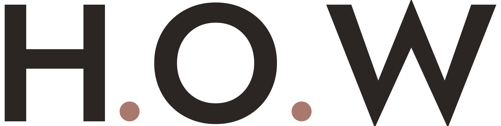

내 폰으로 1분 만에
피부결 테스터
카메라로 피부를 가까이 찍으면
매끄러움 · 모공 · 잔주름을 분석해 드려요
정확한 측정을 위한 촬영 가이드
- 밝고 고른 빛창가 자연광 또는 밝은 실내조명. 그림자가 지지 않게
- 플래시는 끄기쓴다면 매번 같은 조건으로 촬영하세요
- 약 10cm 거리초점이 선명하게 맞는 가장 가까운 거리
- 볼 또는 이마가이드 사각형 안에 피부만 가득 차게
- 메이크업 없이세안 후 맨얼굴, 유분은 가볍게 정돈
🔒 H.O.W는 사진을 받지 않아요. 사진은 서버로 전송되지 않고 내 폰 안에서만 분석돼요
개인정보 · 이용 안내
사진 처리 — 촬영하거나 선택한 사진은 이 기기의 브라우저 안에서만 분석되며, 어떤 서버로도 업로드·전송·저장되지 않아요. 분석이 끝나면 원본 사진은 화면을 닫을 때 사라져요.
측정 기록 — ‘기록 저장하기’를 누른 경우에만 점수와 작은 썸네일이 이 휴대폰의 브라우저 저장소에 저장돼요. 다른 기기와 동기화되지 않고, H.O.W도 볼 수 없어요. ‘지난 측정 기록 보기 → 기록 전체 삭제’ 또는 브라우저 사이트 데이터 삭제로 언제든 지울 수 있어요.
공유 — ‘결과 이미지 공유’는 직접 선택한 앱으로만 이미지가 전달돼요.
카메라 권한 — 측정 중에만 카메라를 사용하며, 화면을 벗어나면 즉시 꺼져요.
유의사항 — 본 서비스는 피부결 경향을 보여주는 참고용 도구이며 의료기기나 의학적 진단이 아니에요. 피부 질환이 의심되면 전문의와 상담하세요.
피부결을 분석하고 있어요
조명 보정 중…
측정할 수 없는 사진이에요
정확한 결과를 위해 점수를 표시하지 않았어요. 촬영 가이드를 확인하고 다시 찍어주세요.
항목별 점수
분석 영역 시각화
맞춤 케어 팁
피부결 변화
개인정보 · 이용 안내
H.O.W는 사진을 수집하지 않아요. 사진은 이 기기 안에서만 분석되며 서버로 전송·저장되지 않아요. 측정 기록은 ‘기록 저장하기’를 누른 경우에만 이 휴대폰의 브라우저 저장소에 저장되고, 언제든 삭제할 수 있어요.
본 결과는 피부결의 상대적 경향을 보여주는 참고용 정보이며 의학적 진단이 아닙니다. 조명·거리·초점·카메라 기종에 따라 결과가 달라질 수 있으니, 변화를 비교할 때는 같은 장소·같은 조건에서 촬영해 주세요. 피부 질환이 의심되면 전문의와 상담하세요.